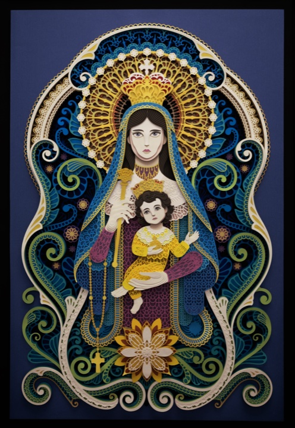
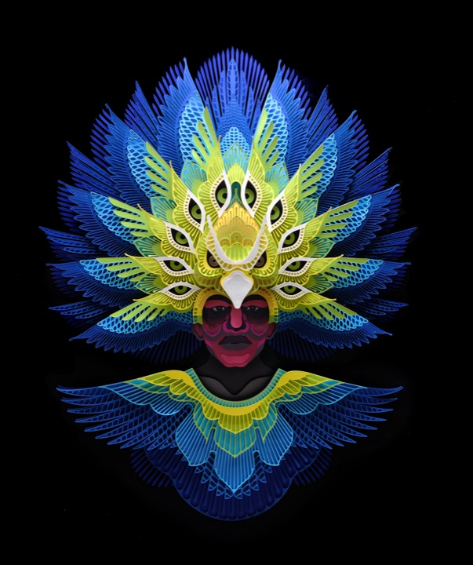
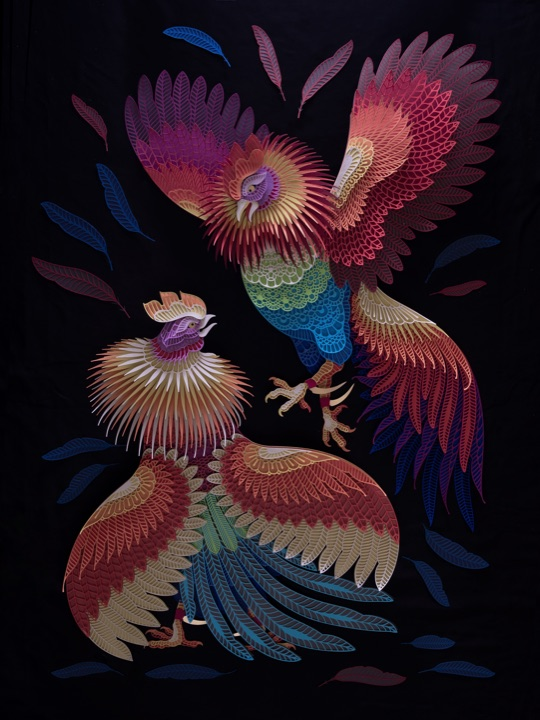
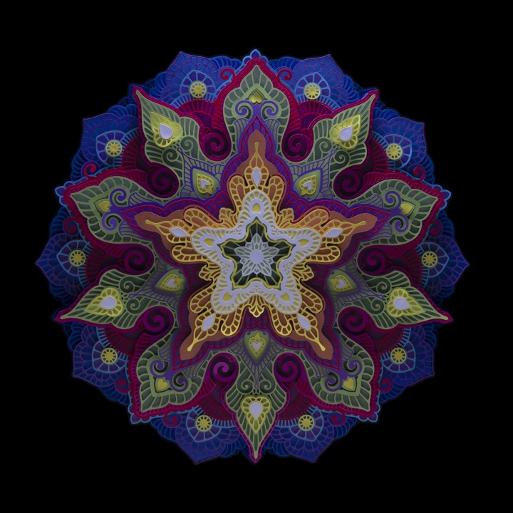
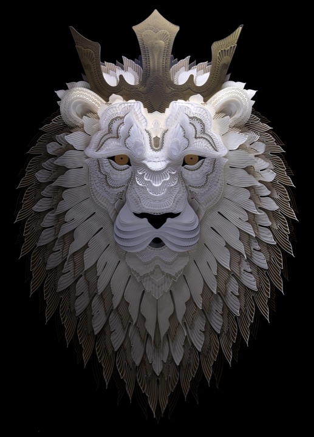
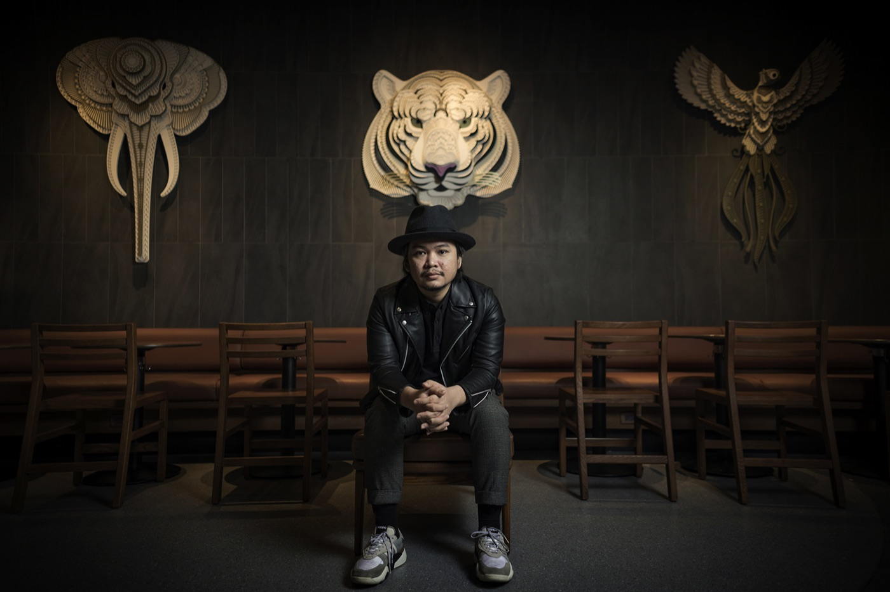
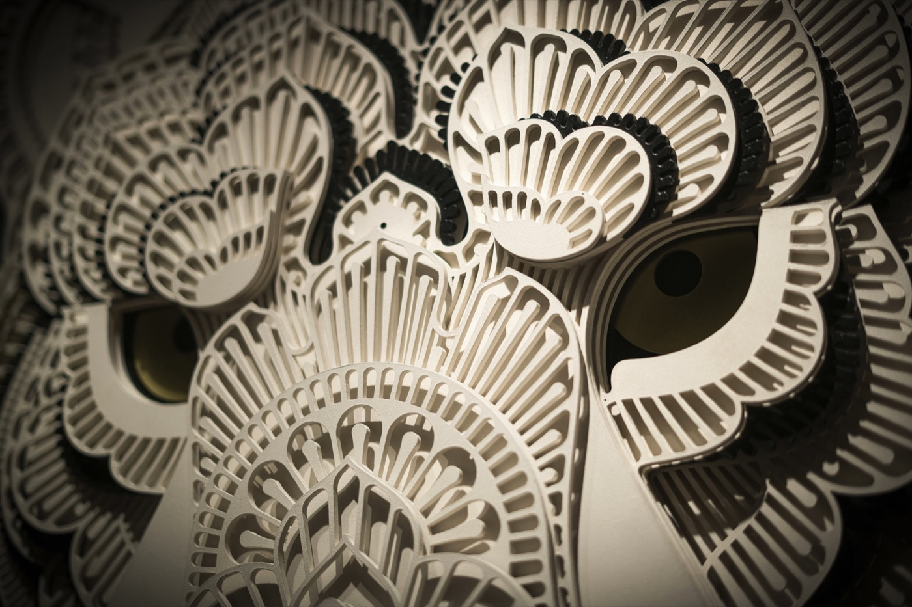

Starbucks Reserve
Sculpture

Paper sculpture. Digital experiments.
Artist & technologist · Philippines
Featured collaboration · Starbucks
Three coffee-growing regions. Three extraordinary animals.
A sculptural collection for Starbucks Reserve.
Paper sculpture and layered commissions, shaped by nature, cultural memory, and an attention to detail.
Sculpture

Culture & heritage

Culture & heritage

Culture & heritage

Culture & heritage

Culture & heritage

Sculpture

Sculpture
Custom algorithms exploring craft, culture, and organic form. Weaving, basketry, and textiles become code-driven visual experiments.

The artist
Patrick Cabral is a Filipino artist and technologist working across intricate paper sculpture, generative tools, and digital experimentation.
His work brings the natural world into conversation with Filipino culture. Delicate patterns become dimensional forms; familiar animals and cultural symbols become an invitation to look closer.
From hand-cut paper to computational studies, each medium offers another way to explore form, rhythm, and possibility.
More about the artist
A closer look
A line becomes a pattern. A pattern becomes a layer. Together, they become something you can almost feel before you touch it.
Explore the detailsCommissions · Collaborations · Inquiries
For artwork inquiries, commissions, exhibitions, or a conversation about an idea, leave a note.
peacabral@gmail.com